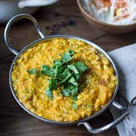

Lentil Dahl

Description
A classic dish full of protein from the split red lentils which is served with rice.
Ingredients
- Garlic
- White onion
- Sunflower oil
- Cumin
- Coriander
- Chillis
- Ginger
- Turmeric
- Sweet potato (or indeed any addition to the dahl, carrots or cauliflower make a great addition)
- Red split lentils
Instructions
- Create the basic sauce by frying the onions and adding in the cumin, coriander, ginger, turmeric, and chilli.
- Blend to taste.
- Parboil the sweet potatoes (or vegetable of your choice)
- Add lentils and water
- Allow to simmer
- Et, voilá!
Return to main page